| 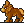 짐승 |
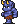 수인 |
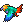 새 |
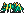 곤충 |
파충류 |
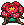 식물 |
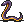 뱀 |
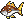 물고기 |
 수생 |
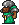 인간 |
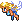 정령 |
무기질 |
| 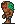 좀비 |
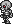 해골 |
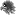 악령 |
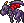 악마 |
| 종류 | 설명 |
|---|---|
| 속성 | 몬스터의 속성 |
| 내성 | 상태 이상, 효과를 무효화 정신 : 혼란, 매료, 광전사 압력 : 검의 기술- 공압파(空圧波) |
| 아이템(고) | 떨어뜨리는 아이템, 확률은 아이템(저)보다는 높다 |
| 아이템(저) | 떨어뜨리는 아이템, 확률은 꽤 낮다 |
| 술법P | 술법 포인트, 사용할 때 마다 소비 |
| 기술P | 기술 포인트, 사용할 때 마다 소비 |
| 출현 전투 횟수 | 해당 몬스터가 출현할 때까지의 전투 횟수 |
| 기술점 | 기능 레벨을 올릴 때 필요한 포인트, 일종의 경험치 |
| 사용 기술 | 몬스터가 사용하는 기술/술법 |